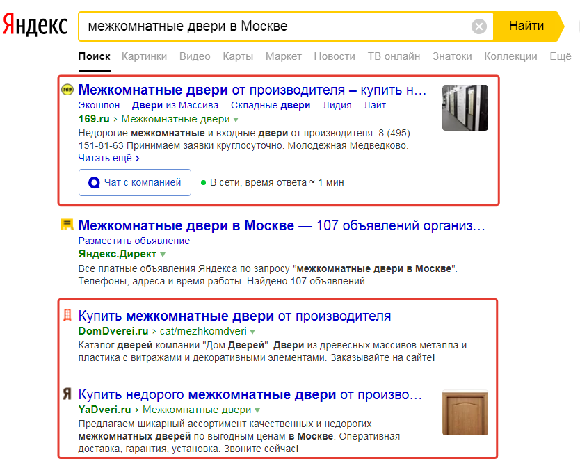
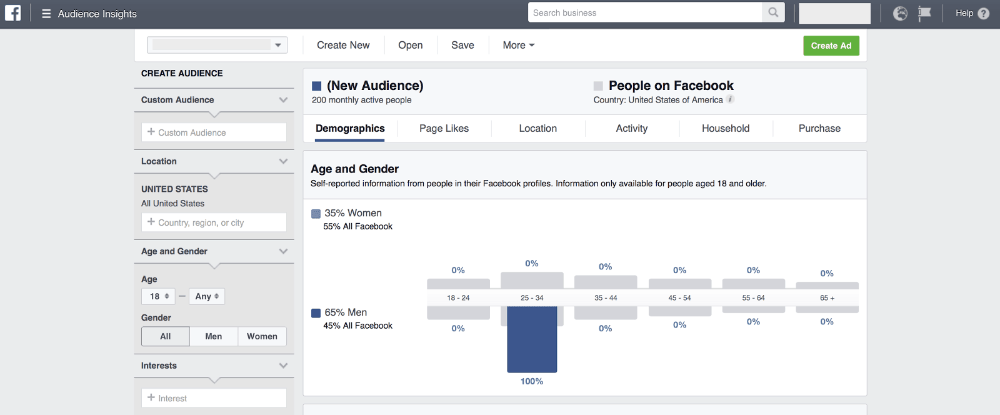
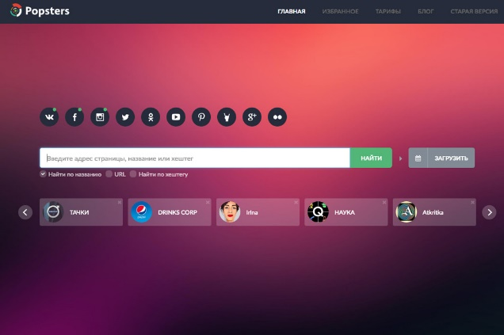
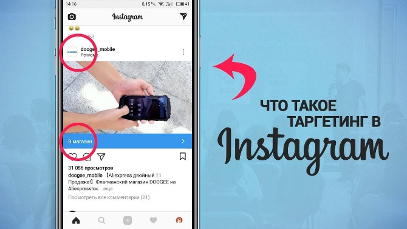
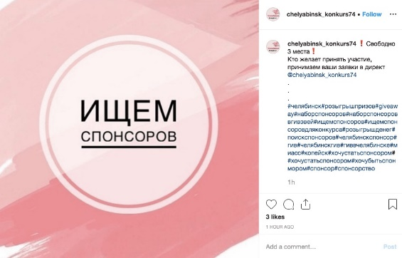
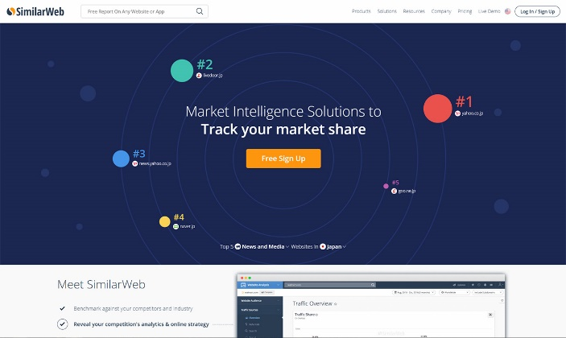
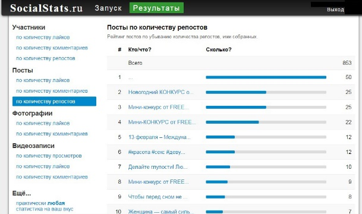
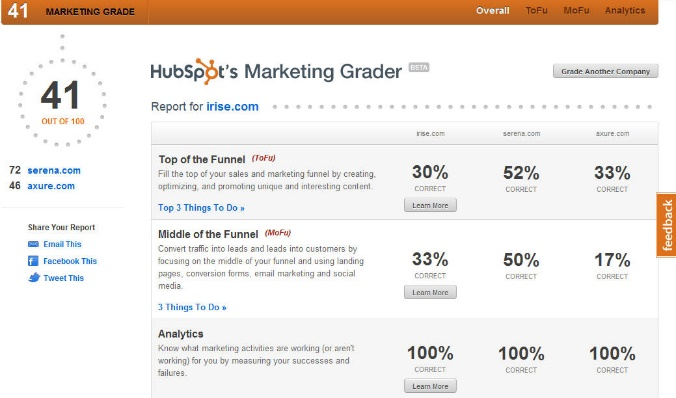

Из этого материала вы узнаете:
Польза анализа конкурентов
3 направления для анализа конкурентов в Интернете
С чего начать анализ конкурентов в социальных сетях
3 варианта, где искать конкурентов
Анализ группы конкурентов в соцсетях
Анализ контента конкурентов в социальных сетях
Анализ рекламы и общения конкурентов в соцсетях
Анализ вовлечения пользователей
SWOT-анализ конкурентов в социальных сетях
8 сервисов для анализа конкурентов в социальных сетях
Анализ конкурентов в социальных сетях нужен каждому предпринимателю — кто только решил завести себе страничку или уже давно продвигается. Новичку станет понятно, что и когда постить, чтобы привлекать аудиторию, а бывалому — как это делать еще лучше. В том и другом случае так называемый шпионаж за конкурентами будет только на руку.
Анализировать нужно все: обложку группы, публикуемый контент и время, в которое он выходит, а также рекламу в соцсетях и вовлеченность аудитории. Последний параметр считается самым важным, так как именно он показывает, интересна ли страница или группа подписчикам. Где нет лайков и репостов, там все глухо как в танке.
Ниже мы расскажем, как анализировать конкурентов в социальных сетях и что полезного из полученных сведений можно почерпнуть для себя.
Анализ конкурентов в социальных сетях необходим для того, чтобы оценить преимущества и недостатки своей компании в сравнении с другими предприятиями, представленными на рынке.
Такое исследование будет полезно не только перед началом раскрутки нового продукта, но и в ходе дальнейшей работы с ним. Поэтому анализ конкурентов в социальных сетях рекомендуется проводить на регулярной основе.
Чем полезно такое исследование? С его помощью можно:
сделать анализ рынка и конкурентности;
определить наиболее эффективные площадки для продвижения;
сделать оценку эффективности разных стратегий продвижения;
просчитать риски, связанные с работой конкурирующих фирм;
выявить недостатки и упущения в своей стратегии продвижения;
подыскать новые идеи и направления для рекламы продукта;
определить преимущества своего продукта и сосредоточиться на них;
оценить недостатки в работе конкурентов и сделать своим клиентам более привлекательное предложение;
подобрать оптимальные KPI и определить цели рекламной и SMM-стратегии.
Такие возможности позволяют превратить анализ конкурентов в соцсетях в эффективный маркетинговый инструмент. Провести такое исследование можно путем ручного анализа данных или воспользовавшись специальными программными продуктами.
На какие области в Интернете стоит направить внимание при изучении конкурентов:
Контент на сайте, включая главную страницу, семантическое ядро
Для начала определяем прямых конкурентов. Делается это легко: вбиваем в строке поисковой системы ключевое словосочетание, характеризующее вашу компанию. Например, «магазин игрушек Казань». ТОП-10 выдачи и будут главными конкурентами.
Небольшим компаниям, работающим в пределах одного города или района, достаточно сформировать список фирм, у которых аналогичные покупатели в таких же территориальных пределах. Что касается онлайн-магазинов с доставкой по всей России, им определить конкурентов будет сложнее, особенно при продаже неуникальных товаров и услуг. Список будет большой, объем работы возрастает, однако полученный анализ поможет разобраться, какие компании обогнали вас в развитии, а какие являются вашими прямыми конкурентами.
Рекомендация: ведите учет «противников» в таблице. Наглядное представление помогает быстро сравнивать показатели друг с другом. Укажите наименования компаний, скопируйте ссылки на их веб-сайт, краткую информацию, а также отметьте место в поисковой выдаче по основным фразам и используемые каналы рекламы (СЕО или контекст).
Во многих сферах бизнеса слежка распространяется и на косвенных конкурентов, сведения о которых могут оказаться полезными. Например, когда бренд продает не только детские игрушки, но и одежду, аксессуары, предметы мебели и прочее. За крупными представителями рынка также важно наблюдать.
Как только список брендов сформирован, приходит время определить количество клиентов, привлекаемых компаниями. Эффективен ли путь их продвижения, какие стратегии и ресурсы используются? Можно сразу изучать конкурентов в сравнении с вами.
Анализируем уровень прироста подписчиков или покупателей. Для вас важен канал рекламы, через который идет привлечение аудитории. Например, конкурент активно развивает «Инстаграм» — возможно, вам также стоит обратить внимание на эту платформу. Можно использовать источники, которым до этого уделялось недостаточно внимания (контекстная реклама).
Внешнее продвижение: ссылки, ИЦ, публикации, форумы
В сфере «бизнес для бизнеса», которая предлагает клиентам практически уникальный продукт, анализ внешних ресурсов конкурентов играет важную роль. В Интернете имеются различные сервисы, которые помогают вычислить количество упоминаний бренда, определить индекс цитирования и т. п.
Соцсети
sps-sng.ruБыстрорастущий формат ведения бизнеса. Именно социальные сети показывают внутреннюю кухню бренда. В свободном доступе содержится информация о количестве подписчиков, впечатлениях о продукте, компании и многом другом.
Найти официальные профили социальных сетей ваших конкурентов можно на их сайтах. Чаще всего иконки размещаются в шапке или футере страницы.
Отметьте, какие платформы преобладают, не забудьте скопировать данные в вашу таблицу.
Помните, что многие бизнесы работают исключительно в социальных сетях, не заморачиваясь созданием полноценного сайта. Поэтому в поисковой выдаче может оказаться именно страница с социальной площадки. Игнорировать подобные бренды не рекомендуется.
После полноценного аудита сайтов советуем провести изучение каждой соцсети главных конкурентов по отдельности.
Не нужно быть гением, чтобы провести быстрый анализ брендов, которые вас интересуют. Каждый человек в состоянии зайти на сайт компании и пролистать посты или страницы. Однако такое поверхностное изучение даст незначительные результаты, которые вас вряд ли устроят. Скорее всего, вам надоест пустая трата времени, поскольку полноценных выводов так и не будет сделано. Если перед компанией стоит задача определить стратегию конкурирующего бренда, то могут возникнуть трудности: куда идти и где искать?
Так что же нужно делать?
Когда компания озадачивается вопросом поиска и анализа прямых конкурентов, перед ней встает несколько задач. Например, большинство брендов считают, что они соревнуются только с крупнейшими лидерами отрасли. Однако на рынке присутствуют множество других игроков, которые забирают значительную часть ваших покупателей. В итоге компания формирует ложную стратегию, что не приносит положительных результатов. Поэтому начинаем анализ с верного определения конкурентов.
Узкоспециализированным магазинам, торгующим индийскими маслами, не имеет смысла соревноваться с крупными брендами, предлагающими средства со всего мира. Вы добьетесь большего успеха, равняясь на мелкие торговые точки вашего города, предлагающие такую же продукцию. Онлайн-магазин, торгующий эксклюзивными бамбуковыми расческами, не сможет выстоять против фабрики, выпускающей все виды аксессуаров для волос. Ваша цель — бренды узкой ниши, как и вы.
Сильный конкурент легко может быть обнаружен. Рассмотрим основные способы, как это сделать:
Поиск по основным ключевикам
 obrazstroy.ruКак клиент ищет продукцию, которую вы предлагаете? «Купить розы в Нижнем Новгороде»? «Научиться играть на гитаре?» Используем самые известные сети — «Яндекс» и Google. Поисковики предлагают сервисы, которые определяют популярность каждого запроса (например, WordStat). С его помощью можно быстро составить релевантное семантическое ядро, которым также пользуются ваши прямые конкуренты. Не забываем про соцсети, анализируя цельную картину.
Использование хештегов
Не самый быстрый способ определения конкурентов. Для поиска брендов необходимо ввести #название_бренда или #указание_услуги (например, #азия_шоп или #татуаж_брови). В итоге поиск выдаст компании, которые пользуются такими же подсказками. В некоторых сложных сферах трудно определить конкурентов этим способом: бренды, формируя персональный стиль, создают отдельные фразы для авторских хештегов.
Потребуется время, чтобы проанализировать каждое интересующее вас объявление. После вычисляем активные социальные сети. Проделав эту работу, ваша компания получит ценные сведения о конкурентах.
Поиск на социальных площадках
 roman.uaДля проведения аналитики рекомендуем сервис от Facebook — Audience Insights. Инструмент находится в рекламном кабинете профиля. Необходимо открыть меню настроек, затем нажать на кнопку со статистикой. Далее в зависимости от целей поиска и анализа рассматриваем аудиторию с разных позиций.
Audience Insights отлично подходит для работы с Facebook и Instagram. Благодаря платформе легко вычислить, какой объем потенциальных лидов присутствует в социальных сетях, что интересует пользователей, на какие группы они подписаны. Сравнение аудитории поможет определить точки ее соприкосновения с вашей компанией. Далее разрабатывается верная стратегия, а значит, каналы рекламы дадут результат.
Не забудьте записать полученные сведения: таблица является удобным и эффективным инструментом.
Перед любым исследованием важно точно и четко определить объект, который необходимо проанализировать. Рассмотрим, что поможет при выборе групп конкурентов:
Визуальный контент
Групп в социальных сетях огромное количество. Однако именно беглый осмотр поможет отсеять ненужные сообщества. Сформированный перечень действующих групп, которые составляют вам конкуренцию, далее анализируется посредством специальных инструментов.
На первый взгляд сообщество кажется популярным, большое число подписчиков привлекает внимание. Однако все это может оказаться обычной накруткой, и признаки этого — практически нулевая активность и отсутствие свежих постов. Группа, в которой из 100 тыс. человек видимость постов на уровне 1 %, нас точно не интересует.
Мы не найдем ценных сведений для аналитики у конкурентов, которые не развивают сообщество и бизнес. Какой результат может принести бессмысленная закупка пользователей при минимальной реакции на контент? Нам нужны только серьезные представители ниши, анализ действий которых поможет улучшить собственную стратегию.
Количественные показатели
Какие параметры нас интересуют:
Число пользователей. Здесь принцип «больше — значит лучше». Если сфера бизнеса узкая, количество подписчиков все равно должно быть не менее 1 тысячи. В противном случае изучение конкурента будет необъективным.
Частота постинга. Выход публикаций должен быть постоянным — каждый день или два. Если вы заметили, что никакой активности со стороны админов группы не происходит в течение 4–6 месяцев, сообщество не представляет для вас интерес.
Процент вовлеченности пользователей. Провести точную работу помогут специальные сервисы, поэтому при самостоятельном осмотре определять уровень вовлеченности не нужно. Чаще всего люди активны в группе либо нет. Визуально вы можете пролистать посты, отметив число комментариев и лайков. Хорошим результатом является 10 % реакций пользователей от общего числа просмотров. В узконаправленных нишах число «сердечек» может достигать 20, что уже является достижением. Обратите внимание на активность аудитории под рекламными или продающими постами.
Охват публикаций. Должен начинаться от 1500 просмотров и выше. Это поможет провести аналитику более точно.
Добравшись до этого шага, аналитик компании рассматривает внутренние составляющие контента: уникальность и качество, темы, периодичность постов, обыгрывание инфоповодов, голос бренда.
Изучение наполнения социальных сетей конкурентов поможет определить основную тематику, тональность коммуникаций.
Что касается количественных данных, самостоятельно рассчитать показатели по каждому конкуренту затратно по времени. Понадобятся специальные сервисы.
 popsters.ruСделать анализ конкурентов в социальных сетях бесплатно поможет сервис в Popsters.ru Находим интересующий нас ресурс и определяем временные рамки.
Отчет покажет:
коэффициент вовлеченности / публикация = ERpost;
коэффициент вовлеченности / период времени = ERday;
число опубликованных записей;
и множество других показателей.
Не забывайте вносить сведения о каждом конкуренте в отдельную вкладку таблицы.
Активность в группе отражается с помощью репостов, комментариев и лайков.
Определить частоту размещения публикаций можно по формуле: число постов делим на временной промежуток, который изучаем.
Сервис Popsters быстро определяет публикации, имеющие наивысший коэффициент вовлечения или набравшие большее число лайков. Благодаря полученным данным вы сможете скорректировать собственную стратегию.
Имеется возможность анализа длины постов, времени их размещения и множества других полезных сведений.
Исследование рекламы
 o-instagram.ruОбратите внимание, каким образом настроена целевая, или таргетированная, реклама.
Сделать это легко — достаточно посетить страницу конкурента на Facebook. Далее выбираем пункт «Информация и реклама». Сайт покажет вам, какие сториз в Instagram и посты были размещены этой компанией.
Используя парсинг в социальной сети «ВКонтакте», можно обнаружить рекламные объявления, опубликованные от лица интересующего вас бренда. Даже скрытый контент легко вычислить по уникальному ID.
Советуем также использовать платформу для мониторинга промопостов — publer.pro. Просто вставляем ссылку на ресурс, а сервис самостоятельно обнаружит объявления, ведущие на сайт. В случае, если рекламный пост уже удален из группы соцсети, сайт-помощник все равно определит время его размещения.
Также платформа помогает определить, взаимодействует ли бренд с профилями Instagram. К сожалению, сториз с рекламными объявлениями обнаружить невозможно.
Изучение способов коммуникации
Не стоит оставлять без внимания данный момент. Он играет важную роль при понимании стиля общения конкурента с потенциальными и существующими клиентами, а также помогает определить каналы связи и их качество.
Обратитесь к социальным сетям, где происходит передача информации:
Ответы под постами.
Личные сообщения.
Онлайн-боты и «Обсуждения».
Комментарии при упоминании бренда пользователями соцсети (происходит не на официальной странице компании).
Для различных бюджетов имеется множество платформ, которые помогают следить за упоминаниями бренда-конкурента. Сюда входят Brandwatch, Babkee, Awario и прочие.
Разбор ToV
ToV, или тональность коммуникации, определяет культуру общения бренда со своей непосредственной аудиторией. По каким критериям судят данный параметр:
Присутствуют ли штуки? Общается ли бренд с юмором?
Идет общение с использованием местоимения “Вы”?
Стиль общения: родитель (компания наставляет и советует) — ребенок, два взрослых человека (профессиональный разговор с шутками) или ребенок (заигрывает по-детски) — клиент.
Есть ли различие в форме общения и обработки информации от пользователей в социальных сетях?
Как только нужные вам сведения будут получены, добавьте их в таблицу о конкурентах. Также проведите анализ компании, используя технику SWOT (о ней ниже).
У вас появится полная картина текущего положения конкурентов, а также стратегии их развития, когда будет собрана вся аналитическая и статистическая информация.
Почему конкурирующий бренд имеет успех (или наоборот)? В чем секрет его продвижения? На эти вопросы можно частично найти ответы, если тщательно проанализировать такой показатель, как вовлеченность пользователей.
Исследования говорят, что сообщество конкурента имеет высокий коэффициент вовлеченности. Первая мысль — у такого бренда стоит поучиться. Однако не нужно торопиться с выводами.
Сегодня пользователей сложно удивить и заинтересовать. Во многом уровень вовлеченности в сообществах нестабилен, он находится в постоянном движении, напоминая волну. Подъемы, например, могут быть спровоцированы объявлениями о розыгрыше, подарках или другой «халяве». Поэтому активный прирост аудитории может не дать результата: часть подписчиков уйдет после окончания конкурса, а остальные так и будут висеть, никак не проявляя себя ни лайками, ни комментариями.
В связи с волнообразным движением уровень вовлеченности бренда имеет показатель выше среднего. Однако реальная ситуация такова, что посетители сообщества не заинтересованы в компании.
Рассмотрим, какие виды активаций наиболее часто задействуют различные группы. На их примерах можно эффективно проводить аналитику вовлеченности интересующего вас конкурента:
Опросы
Это пример инструмента анализа конкурентов в социальных сетях, который помогает хорошо изучить посетителей сообщества: их возрастную группу, половую принадлежность, хобби и интересы, наличие партнера, детей и прочую информацию. Опросы являются полезным инструментом, который дает компании возможность определить свою активную аудиторию, а также улучшить наполнение сообщества, сделав его интересным для людей. Например, у вас есть несколько вариантов контента. Проведите опрос, узнав напрямую у аудитории, что ее больше всего интересует в вашей компании или продукте. Данный инструмент также применяется для сбора обратной связи и т. п.
Конкурс на выполнение творческого задания
На стене сообщества публикуется пост с правилами задания. Например, подписчик должен выполнить описанные условия. В результате он получает вознаграждение. Чаще всего компании проводят конкурс на лучшую фотографию. Это действенный способ достичь сразу нескольких целей. Во-первых, попросив аудиторию сделать оригинальное фото с продуктом и отзыв о нем, вы легко получите уникальный контент для будущего использования. Во-вторых, участники естественным образом станут распространять информацию о вашей компании, что абсолютно бесплатно расширит вашу аудиторию.
Раздача ценных призов (giveaways)
 instaplus.meНаиболее простой вид активации, который практически не требует от пользователя траты времени. Суть проста: подписаться на организаторов конкурса, поставить лайк, написать комментарий под записью или отметить друга, поделиться постом на своей странице или в сториз. Популярность розыгрышей понятна, однако тут бренду стоит быть осторожным: на такое объявление откликается не только заинтересованная аудитория, но и посторонние любители легких призов. Обратите внимание: в качестве подарка лучше выбирать именно тот продукт или услугу, которые важны ЦА.
Игровые задания
Упор на поведенческие характеристики пользователей. С помощью игр легко привлечь внимание людей к компании. Разнообразие активностей зависит от вашей фантазии: загадки, кроссворды, ребусы и прочее.
Три показателя, которые интересны для анализа активности аудитории в сообществе:
Реакция пользователей на проведение игр (число принявших участие).
Польза подобной активности для компании-конкурента. Подойдет ли данный выбор для вашего бренда?
Участники активации. Привлекла ли компания только целевых пользователей или еще и любителей «халявы»? Откройте 10–15 случайных профилей людей с конкурса — беглого взгляда будет достаточно, чтобы понять, ваша это ЦА или нет.
Полученные результаты помогут вам выстроить картину стратегии конкурента. Далее вам придется принять решение, использовать ли данные механизмы в своей собственной стратегии.
SWOT-анализ — это определение сильных и слабых сторон, возможностей и угроз бизнеса. Один из самых распространенных в маркетинге видов анализа.
S — Strengths (сильные стороны).
W — Weaknesses (слабые стороны).
Opportunities (возможности).
T — Threats (угрозы).
Как видно из расшифровки определения, анализ позволяет изучить четыре категории, которые характерны для каждого бренда на рынке. При знании достоинств и недостатков компании она дает инструменты для создания такой стратегии, которая наиболее оптимальным способом поможет использовать имеющиеся ресурсы и развивать бизнес далее. SWOT-анализ обладает уникальным преимуществом, поскольку используется в любой сфере деятельности при оценке социальных сетей конкурентов.
Для более эффективного структурированного анализа возьмите квадрат, разбитый на четыре части (каждая соответствует одной из букв SWOT). Таким образом можно наглядно оценить сильные и слабые стороны конкурента.
Начинаем со Strengths. Какие здесь могут быть примеры:
оригинальная подача контента;
эффективная реклама;
ненавязчивое продвижение;
креативное использование методов рекламы.
Возможно, идеи конкурентов дадут толчок вдохновения вашей команде. Не забудьте отметить информацию в первом квадрате таблицы.
Критерии, по которым определяются сильные стороны конкурентов:
Возможности для дальнейшего развития.
Ресурсы, имеющиеся в наличии у компании.
Уникальность бренда по сравнению с остальными.
Преимущество перед конкурентами.
Достижения работников компании.
Преимущество перед конкурентами.
Наличие материальных и нематериальных активов.
Определение Weaknesses. Параметры:
Обратная связь с пользователями и покупателями.
Причины недовольных отзывов.
Скучный контент, на который не реагирует аудитория.
Постоянная реклама.
Переходим к анализу Opportunities:
Цена продукта компании остается на месте, растет или идет вниз?
Конкуренты в чем-то превосходят вас? Если да, то рассматриваете ли вы это как возможную угрозу?
Будущие изменения, оказывающие положительное влияние на сферу вашей деятельности.
Развитие онлайн-рынка помогает вашему бизнесу?
Последним пунктом изучают Threats:
Список конкурентов.
Влияние политики на экономику отрасли.
Появление новых сильных игроков на рынке.
Ненадежность поставщиков.
При заполнении таблицы двигаться нужно в указанном порядке:
Собираем информацию для стратегического анализа (преимущества и недостатки), составляем SWOT.
Проводим исследование, сравниваем показатели и статистические данные по социальным сетям брендов.
Отмечаем интересные способы продвижения, которыми пользуются основные конкуренты, и стараемся повторить их в своем сообществе.
Перерабатываем текущую стратегию продвижения компании, меняем его способы и каналы, внедряем более успешные идеи.
За все время анализа накопится большой объем данных, который необходимо будет структурировать. Не забываем о периодической актуализации данных. Налаживание коммуникации с целевой аудиторией, создание запоминающегося бренда и мощной рекламной стратегии — все это нельзя сделать за один день. Созданная таблица в будущем напомнит вам о существенных моментах и сэкономит ваши силы и время.
Некоторые бренды не только собирают данные о конкурентах, но и полностью используют их стратегию продвижения. Уникальный и качественный контент понравится вашей аудитории больше, поэтому мы не рекомендуем данный метод. Стиль компании создается из множества компонентов.
Возможно, придется доработать некоторые области. Ищите недостатки, которые важно устранить. Некоторые полезные вопросы:
Непостоянный и скучный контент в социальных сетях?
Влияние политики на экономику отрасли.
Появление новых сильных игроков на рынке.
Частичное отсутствие информации о компании?
Стремитесь каждый день становиться лучше.
SimilarWeb
 imd-net.comСервис аналитики, который помогает собрать комплексную информацию. Незаменим при проведении анализа данных.
Однако стоит заметить, что сведения, предоставленные SimilarWeb, могут иметь погрешность в данных (в среднем 10–15 %).
Для анализа конкурентов в социальных сетях сервис поможет получить перечисленную ниже информацию:
Откуда приходит трафик на страницу.
Какова посещаемость сайта.
Основные поисковые фразы, используемые при переходе.
Геолокация аудитории.
Количество посетителей, пришедших из соцсетей.
Отчет может быть загружен в формате PDF или представлен на странице проекта.
Popsters
Помогает собрать статистические и аналитические показатели контента.
Благодаря платформе вы сможете узнать о социальных сетях конкурента следующее:
Коэффициент вовлеченности пользователя.
Периодичность публикаций.
Уровень взаимодействия аудитории.
Перечень и анализ лучших публикаций.
Оценку контента бренда-конкурента (количество лайков и комментариев).
Данные представлены визуальным контентом. Можно проводить анализ различных социальных площадок, таких как «ВКонтакте» или Instagram.
SocialStats
 madwins.ruИнструмент для создания эффективных коммуникаций с целевой аудиторией в различных соцсетях.
Синхронизируется со всеми популярными площадками, такими как Instagram, Facebook, «ВКонтакте» и т. п.
Сведения, получаемые за счет сервиса SocialStats:
Сравнительная таблица групп.
Оценка размещенного на стене контента.
Анализ пользователей: коэффициент вовлеченности, уровень активности.
Определение стратегии бренда и его эффективность.
Наличие одинаковых групп пользователей в различных сообществах.
Отчетность выглядит в виде разнообразных списков, моделей и графиков.
Marketing Grader от Hubspot
 tomhumbarger.files.wordpress.comИсследование активности конкурирующих компаний. Используя этот ресурс, можно получить информацию по:
активности конкурирующих фирм в соцсетях;
наличию активности в блогах;
SEO-продвижению и привлечению лидов.
Преимущество этого сервиса заключается в том, что все данные аналитики представлены в форме чек-листа.
По всем секторам аналитики ресурс предлагает варианты по улучшению показателей.
Brandspotter
На этой платформе можно получить информацию по отзывам о конкурентах, которая может быть использована для выстраивания стратегии репутационного менеджмента.
IQBuzz
Сервис IQBuzz будет полезен для исследования всех упоминаний определенной торговой марки в соцсетях. Здесь можно сегментировать информацию по ее направленности: положительные, нейтральные, отрицательные и смешанные упоминания. Ресурс поможет выявить лидеров мнений, определить пиковые точки активности бренда в Интернете, построить сравнительные графики по широкому перечню параметров и уточнить инфоповоды.
Feedspy
На этом ресурсе можно сделать анализ:
графиков увеличения подписчиков на ресурсах конкурентов;
численности реакций по лайкам, репостам и комментариям;
стратегий конкурентов по размещению контента;
таргетинга по сообществам конкурентов в соцсетях.
Опережайте своих конкурентов и продвигайтесь успешнее, чем они.